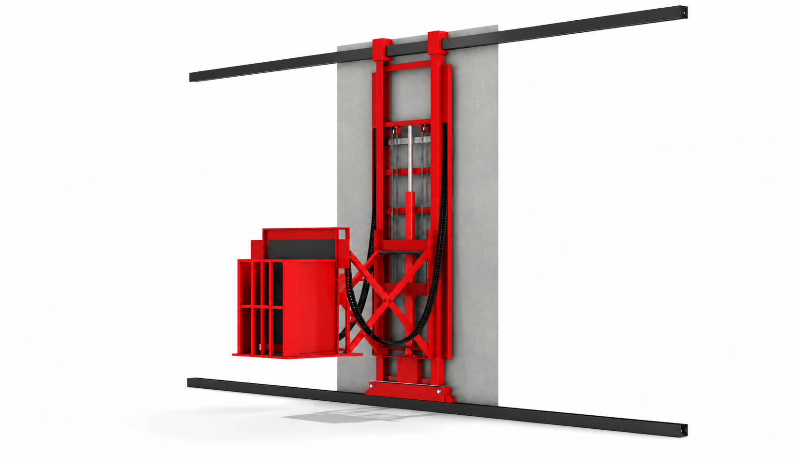
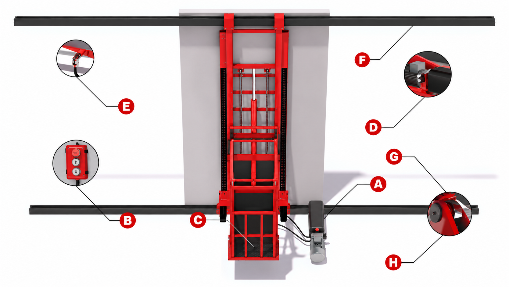
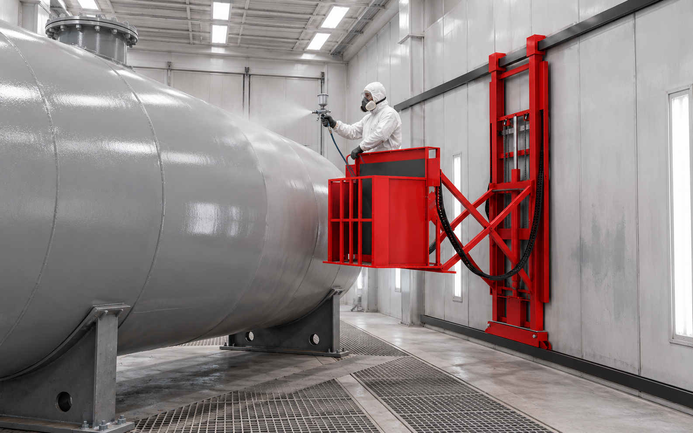

01. Подъемник для окрасочной камеры 3D — общий вид с удлиненной кабиной1639 × 960 px · 1243 KBPNG
02. Подъемник для окрасочной камеры 3D — схема узлов и механизмов1669 × 942 px · 1066 KBPNG
04. Маляр в красной кабине подъемника 3D окрашивает крупную промышленную емкость в окрасочной камере1586 × 992 px · 2598 KBPNG